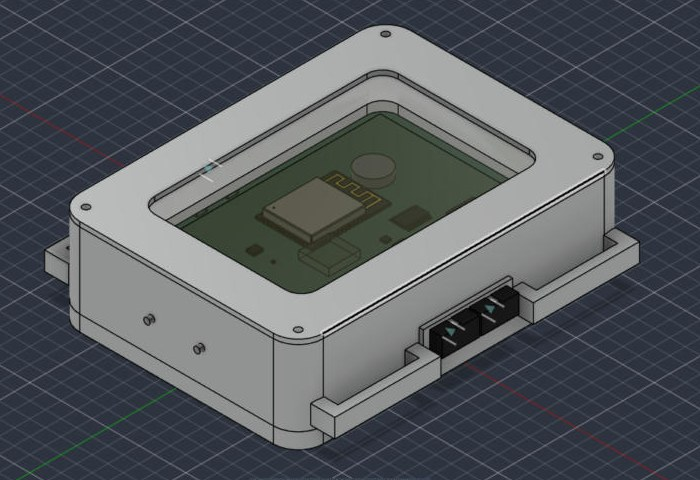
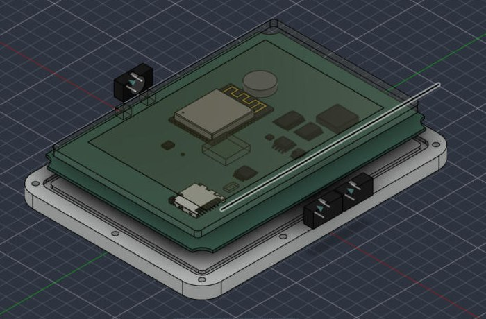

Dykkecomputer for underarmen
Et studentprosjekt i marin teknikk ved NTNU: en dykkecomputer med stor skjerm, dekompresjonsberegning, lesing av flasketrykk fra trådløse sendere, kompass og en mobilapp. Simulatoren under kjører den samme C-koden som skal ligge på dykkecomputeren, kompilert til nettleseren.
Ikke til ekte dykking. Dette er en prototype som ikke er validert. Deko-beregningen er testet mot en uavhengig planlegger, men fastvaren har ennå ikke kjørt på maskinvaren og huset er ikke trykktestet.
Slik tester du simulatoren
- Velg et dykk under Run → Dive, for eksempel «Deco: 40 m, 25 min», og sett farten til 20× eller 60×.
- Bla mellom skjermsidene med UP og DOWN under skjermen. Hold SELECT for menyen: full meny på overflaten, kort dykkemeny under vann.
- Velg «Mistakes» for å se alarmene: for dypt for gassen, for rask oppstigning og brutt deko-tak.
- Skru ned batteriet, huk av «Weak battery in T1» eller øk støyen på senderne for å se varslene og sjekken før dykket.
- I Phone app-panelet: koble til, legg inn utstyr og synk det, lag en dykkeplan og send den til computeren.
- Etter dykket (5 min på overflaten): last ned loggen, eksporter til Subsurface, eller trykk Share for et bilde med profil og kart.
Mobilappen
- Kobler til den ekte dykkecomputeren over Bluetooth: utstyr, dykkeplan, innstillinger, sjekk før dykket, logger, statistikk og fastvareoppdatering.
- Virker i Chrome på Android, Windows, macOS og Linux. iPhone har ikke Bluetooth i nettleseren og trenger en egen app.
- Uten maskinvare: bruk telefonpanelet i simulatoren. Det er den samme appen, koblet til den simulerte computeren.
Fra simulatoren


3D-modeller av huset
Fire varianter, generert fra ett skript (CadQuery) og dimensjonert for 100 m med herdet glass. Zip-filen har hele sammenstillingen og hver del som STEP, tverrsnitt, beregningstall og skriptet som lager STL og 3MF. I Fusion: File → Open og velg *_assembly.step.
| Variant | Skjerm | Hus B × L × H | Linse | Bakplate | Skruer | Vekt, hus |
|---|---|---|---|---|---|---|
dc-2in41-wrist | 2,41" AMOLED | 64 × 78 × 27,8 mm | 5,5 mm | 5,0 mm | 8 × M2 | 201 g |
dc-3in5-forearm | 3,5" IPS (demobygget) | 78 × 106 × 30,7 mm | 7,0 mm | 5,0 mm | 10 × M2 | 368 g |
dc-5in0-budget | 5,0" IPS 800 × 480 | 90 × 138 × 34,2 mm | 9,0 mm | 5,0 mm | 14 × M2 | 599 g |
dc-5in5-forearm | 5,44" AMOLED | 92 × 150 × 32,9 mm | 10,0 mm | 5,5 mm | 14 × M2 | 691 g |
- Skruene står utenfor O-ringen, og bakplaten har et 5 mm PEEK-vindu over ladespolen, fordi trådløs lading ikke virker gjennom aluminium.
- Linse, linsekant og bakplate er håndregnet med plateformler for 1,5 × 100 m. Rammen er ikke FEA-sjekket, og ingen hus er trykktestet.
- Ingen deler overlapper i noen av variantene (automatisk kollisjonssjekk).
- Ikke gjort ennå: spenningssimulering (FEA) av rammen og trykktest.
Fusion-prosjekt: deler, komponenter og sammenstilling
3,5"-varianten (demobygget) er bygget som et Fusion-prosjekt med 37 deler, hver lagret som egen design, og en full sammenstilling der alle delene er satt inn som referanser på riktig plass.


- Mapper: 01 Hus (det som lages selv), 02 Innkjøpte komponenter, 03 Elektronikk (kretskort og koblingsskjema), 04 Sammenstilling, 05 Dokumentasjon.
- Hentede komponentmodeller: ESP32-S3-WROOM-1 fra Espressif, og TSSOP/SOIC/LGA/DFN-pakker, Hirose microSD og Murata-summer fra KiCads 3D-bibliotek (CC-BY-SA 4.0). Resten er forenklede modeller med databladmål.
- Materialer: aluminium 6061 (hus), herdet glass (linse), PEEK (ladevindu), acetal (knapper), 316L (våtkontakter), FR4 (kort). Beregnet masse 487 g med bibliotekmaterialer; batteriet er grovt modellert.
- Ledd: huset er låst, hus, elektronikk og kraft er én stiv gruppe, og de tre knappene har glideledd med ±1,5 mm vandring.
- Kollisjonssjekk i Fusion: ingen overlapp mellom delene. De to treffene Fusion finner ligger inne i Espressifs egen modulmodell (0,002 mm³).
- Prosjektet bygges på nytt med skriptet i skjema-zip-filen (
fusion/bygg_dykkecomputer.py), som henter modellene selv.
Koblingsskjema, rev B
Fire ark, 105 komponenter og 87 nett, med pinnene fra fastvarens board.h. Skjemaet er tegnet med nettnavn på hver pinne og åpnes som elektronikkdesign i Fusion. Fotavtrykk velges når kortet tegnes. Rev B retter elleve feil funnet i kontrollen av kretsene.


Viktigste funn: et lukket aluminiumshus stopper signalet fra tanksenderen, Bluetooth og GPS. Se utregningen og forslaget om midtring i plast.
Foreløpig materialliste
Prisene er estimater i USD fra november 2026. Lenkene er søk hos forhandleren, utenom der et varenummer står: sjekk at modulen er 3,3 V og at selgeren har gode vurderinger før du kjøper.
Koblingsbrett-demo (byggetrinn 1–5)
| Del | Trinn | Funksjon | Antall | Sum | Kjøp |
|---|---|---|---|---|---|
| ESP32-S3 DevKitC-1 N16R8 | 1 | Prosessor og Bluetooth | 1 | $10.00 | AliExpress |
| 3,5" SPI-skjerm ST7796 | 1 | Skjerm | 1 | $18.99 | AliExpress |
| MS5837-30BA breakout | 1 | Dybdesensor A og B | 2 | $40.00 | AliExpress |
| TCA9548A I2C-multiplekser | 1 | Begge dybdesensorene på samme buss | 1 | $1.50 | AliExpress |
| Vibrasjonsmotor-modul | 1 | Hovedalarm | 1 | $1.00 | AliExpress |
| Summer-modul 3,3 V | 1 | Reservealarm | 1 | $0.50 | AliExpress |
| Trykknapper 6 mm | 1 | Tre knapper (byttes til hall-sensorer) | 1 | $0.50 | AliExpress |
| Hall-sensorer + N52-magneter 6×3 | 1 | Forseglede knapper | 1 | $3.00 | AliExpress |
| Våtkontakter, 2 × A4 M3 | 1 | Vekker computeren i vann | 1 | $0.50 | AliExpress |
| Koblingsbrett + ledninger | 1 | Kobling | 1 | $8.00 | AliExpress |
| Kondensator- og motstandssett | 1 | Avkobling og pull-up | 1 | $2.00 | AliExpress |
| PCM1808 ADC-modul | 2 | Sampler mottakerspolen, 96 kHz | 1 | $4.00 | AliExpress |
| Op-amp (MCP6022/TL072) + passive | 2 | Forforsterker for spolen | 1 | $3.00 | AliExpress |
| Ferrittstavantenne | 2 | Tar imot tanksendere | 1 | $1.50 | AliExpress |
| QMI8658 IMU-modul | 3 | Helning til kompasset | 1 | $4.00 | AliExpress |
| MMC5603 magnetometer-modul | 3 | Kompass | 1 | $3.00 | AliExpress |
| VEML7700 lyssensor-modul | 3 | Automatisk lysstyrke | 1 | $1.50 | AliExpress |
| ATGM336H GNSS med antenne | 3 | Posisjon på overflaten | 1 | $6.00 | AliExpress |
| microSD-modul (3,3 V) | 4 | Logger og kart | 1 | $1.00 | AliExpress |
| MAX17048 batterimåler-modul | 4 | Batteriprosent | 1 | $3.00 | AliExpress |
| LiPo 2000 mAh med JST | 4 | Batteri (med beskyttelseskort) | 1 | $7.00 | AliExpress |
| TP4056 lader USB-C | 4 | Lading | 1 | $0.50 | AliExpress |
| Qi mottaker + sender | 4 | Trådløs lading | 1 | $6.00 | AliExpress |
| 3,3 V regulator / boost-modul | 4 | Drift fra batteri | 1 | $1.00 | AliExpress |
| FRAM MB85RC256-modul | 5 | Vevsmetning overlever strømbrudd | 1 | $4.00 | AliExpress |
| RTC-modul | 5 | Klokke | 1 | $2.00 | AliExpress |
| CH32V003 utviklingskort | 5 | Sikkerhets-MCU | 1 | $2.00 | AliExpress |
| 123 kHz-deler (ferritt, diode, LM393) | 5 | Suunto Tank POD-kanal | 1 | $3.00 | AliExpress |
| USB logikkanalysator 8 kanaler | Verktøy | Feilsøking av I2C, SPI og I2S | 1 | $8.00 | AliExpress |
| Totalt | Omtrent 1 370 kr, eller 1 710 kr med 25 % mva. ved import | $146.49 |
Trinn 1: kjerne (dybde, alarmer, knapper). 2: flasketrykk. 3: kompass, GPS og lyssensor. 4: strøm og lagring. 5: senere (FRAM, klokke, sikkerhets-MCU, Suunto-kanal). Bygg og test ett trinn om gangen, slik byggeplanen i kildekoden beskriver.
Kretskort-versjonen (fra koblingsskjemaet)
| Ref. | Del | Antall | Sum | Kjøp |
|---|---|---|---|---|
| U1 | ESP32-S3-WROOM-1-N16R8 | 1 | $3.15 | LCSC C2913202 |
| U3, U4 | MS5837-30BA | 2 | $19.54 | LCSC C2887941 |
| U9 | MAX17048G+T10 | 1 | $1.15 | LCSC C2682616 |
| U15 | CH32V003F4P6 | 1 | $0.20 | JLCPCB C5187096 |
| U2 | TCA9548APWR | 1 | $0.50 | LCSC-søk |
| U5 | QMI8658C | 1 | $1.00 | LCSC-søk |
| U6 | MMC5603NJ | 1 | $1.00 | LCSC-søk |
| U7 | VEML7700 | 1 | $0.80 | LCSC-søk |
| U8 | MB85RC256V | 1 | $2.00 | LCSC-søk |
| U10 | PCF85063ATT | 1 | $0.50 | LCSC-søk |
| U11 | MCP6022 | 1 | $1.00 | LCSC-søk |
| U12 | PCM1808PWR | 1 | $2.00 | LCSC-søk |
| U13 | LM393 | 1 | $0.10 | LCSC-søk |
| U14 | ATGM336H-5N | 1 | $6.00 | AliExpress |
| U16–U18 | TMAG5273 (A1, B1, C1) | 3 | $4.50 | LCSC-søk |
| U21 | MCP73831T-2ACI | 1 | $0.40 | LCSC-søk |
| U23 | TLV75733P (1 A) | 1 | $0.20 | LCSC-søk |
| U24 | TPS61023 | 1 | $0.60 | LCSC-søk |
| U25 | TPS22916C | 1 | $0.40 | LCSC-søk |
| J3 | Hirose DM3D-SF microSD | 1 | $0.80 | LCSC-søk |
| Q1–Q3 | AO3400A | 3 | $0.09 | LCSC-søk |
| BZ1 | Murata PKMCS0909E4000 | 1 | $0.40 | LCSC-søk |
| J2 | 3,5" ST7796 IPS-panel | 1 | $15.00 | AliExpress |
| — | Kretskort, 4 lag, 5 stk | 1 | $8.00 | JLCPCB |
| Sum for delene over | $69.33 |
Ikke med i summen: motstander og kondensatorer, spoler, batteri, Qi-modul, vibrasjonsmotor, magneter, hus, linse, O-ringer og skruer. Budsjettversjonen med 5"-skjerm er anslått til rundt 1 530 kr med mva. når huset freses på verkstedet.
Status
| Del | Status | Merknad |
|---|---|---|
| Deko og oksygen (Bühlmann ZHL-16C med gradientfaktorer) | Ferdig og testet | Høyst 1 min avvik fra decotengu på 54 dykk |
| Alarmer, gassplanlegging, sjekk før dykket, dykkeplan | Ferdig og testet | 191 enhetstester, også med minnesjekk |
| Lesing av Pelagic-sendere (38 kHz) | Ferdig i simulator | Tidene i signalet må måles på en ekte sender |
| Simulator og mobilapp | Ferdig og testet | Fire testsuiter kjører uten nettleser |
| Fastvare for ESP32-S3 | Ikke kjørt | Skrevet og typesjekket, men aldri bygget eller kjørt på et kort |
| Skjermsider på enheten | Ikke skrevet | Simulatoren viser hvordan de skal se ut |
| 3D-modeller (STEP) | Ferdig som prototype 1 | Fire varianter; kollisjonssjekket |
| Fusion-prosjekt med sammenstilling | Ferdig for 3,5" | 37 deler, ekte komponentmodeller, ledd og kollisjonssjekk |
| Koblingsskjema | Rev B | Alle kretser regnet gjennom og elleve feil rettet; ikke gjennomgått av en annen person |
| Radio gjennom huset | Problem funnet | Aluminium demper 38 kHz med ca. 59 dB; plast-midtring foreslått, må måles |
| Kretskortutlegg (PCB) | Ikke startet | Fotavtrykk og utlegg i Fusion Electronics |
| Hus og linse | Ikke testet | Håndregnet for 100 m; trenger FEA og trykktest |
Dette gjenstår
- Kjøp delene til koblingsbrett-demoen og bygg trinn 1. Første ekte bygg av fastvaren med
idf.py. - Ta opp signalet fra en ekte Pelagic-sender og juster tidene i mottakeren.
- Skriv skjermsidene (LVGL) og fastvaren til sikkerhets-MCU-en.
- Mål signalet fra en tanksender gjennom aluminium og plast, og velg hybridhus eller PEEK-vindu.
- Gjennomgå koblingsskjema rev B, velg fotavtrykk og legg ut kortet (4 lag, under 100 × 100 mm).
- Spenningssimulering av rammen i Fusion, så fres huset og trykktest det: 1,5 × 100 m i 30 min, tre ganger, tørt.
- Bluetooth med passord, FRAM- og klokkedrivere, og måling av strømforbruket under dykk.
Hele listen med begrunnelse står i prosjektloggen.